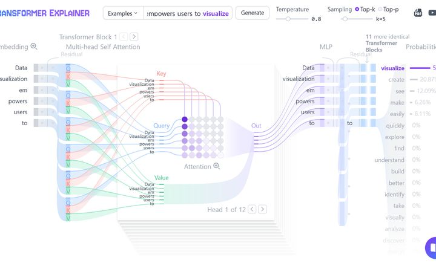
AI 원리 보기Transformer Explainer
GPT-2가 다음 단어를 확률로 고르는 과정을 층마다 보여 줍니다.
해 볼 것 · 문장을 넣고, 1등 단어의 확률과 온도(temperature)를 바꿔 봅니다.
1교시 · 덱 9장열기 ↗
TOOLS
브라우저에서 여는 도구 16가지를 교시 순서로 모았습니다. 화면을 미리 보고, 무엇을 해 볼지 확인한 뒤 엽니다.
1교시 · 로봇팔의 이해 교시로 가기 →

AI 원리 보기GPT-2가 다음 단어를 확률로 고르는 과정을 층마다 보여 줍니다.
해 볼 것 · 문장을 넣고, 1등 단어의 확률과 온도(temperature)를 바꿔 봅니다.
 AI 원리 보기
AI 원리 보기노트북 안의 작은 모델이 웹캠 화면을 보고 문장으로 말합니다(보는 AI).
해 볼 것 · 강사 화면으로 봅니다. 물건을 비추면 무엇이라고 말하는지 확인합니다.
 로봇 시뮬레이션
로봇 시뮬레이션실제 판매 로봇(Unitree G1)이 강화학습한 정책으로 걷습니다. 물리 시뮬레이터(MuJoCo)가 브라우저에서 돕니다.
해 볼 것 · 로봇을 마우스로 밀어 넘어뜨리고, 다시 걷게 하고, 다른 로봇으로 바꿔 봅니다.
2교시 · 프로그램 연결과 기본 조작 교시로 가기 →
 작업 도구
작업 도구엔트리와 라쿤봇을 이어 주는 프로그램입니다.
해 볼 것 · 설치한 뒤 검색창에 「라쿤」을 입력해 연결합니다. 동글을 꽂고 로봇 전원을 켜 둡니다.
 작업 도구
작업 도구로봇 제어 코딩과 모델 학습을 모두 여기서 합니다.
해 볼 것 · 엔트리 코드 모음의 .ent 파일을 「오프라인 작품 불러오기」로 엽니다.
3교시 · 로봇팔 제어 체험 교시로 가기 →
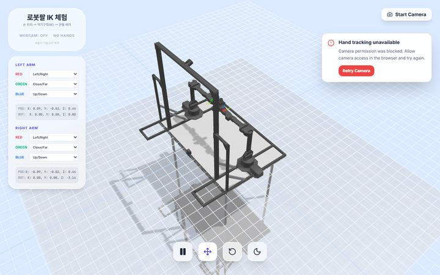
로봇 시뮬레이션웹캠에 두 손을 비추면 시뮬레이션 속 ALOHA 양팔이 따라옵니다. 모방학습용 시범 데이터를 만드는 방식입니다.
해 볼 것 · 「Start Camera」를 누르고 두 손을 움직입니다. 엄지와 검지를 오므리면 집게가 닫힙니다.
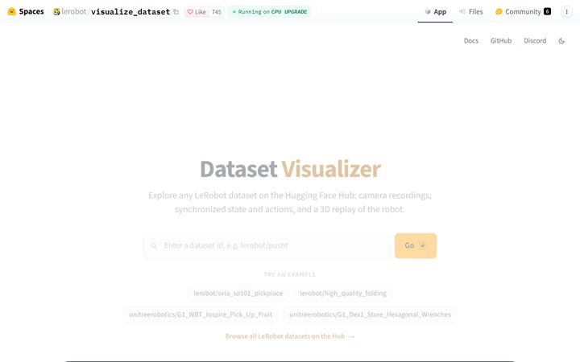
로봇 시뮬레이션실제 로봇 시범 한 편의 카메라 영상과 관절 값 그래프를 함께 재생합니다.
해 볼 것 · 예시 데이터셋을 하나 고르고, 영상이 움직일 때 관절 그래프가 어떻게 변하는지 봅니다.
4교시 · 제어 방식 비교 미션 교시로 가기 →
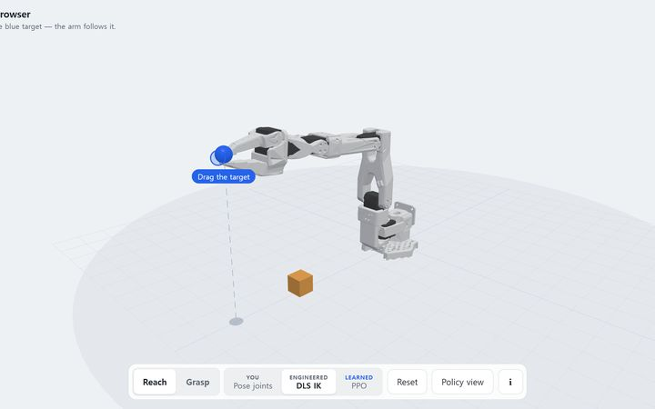
로봇 시뮬레이션같은 로봇팔을 직접(사람) · 공식(역기구학) · 학습(강화학습) 세 가지 머리로 움직여 비교합니다.
해 볼 것 · 파란 목표를 끌고 YOU · ENGINEERED · LEARNED를 바꿔 가며 같은 자리를 다섯 번 비교합니다.
6교시 · 인공신경망 학습 교시로 가기 →
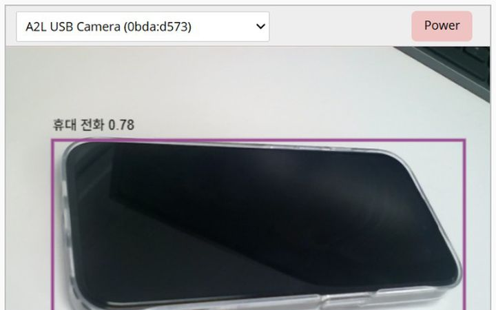
작업 도구이미 학습된 AI(색깔·사물 찾기)를 블록으로 라쿤봇에 붙입니다. 내가 학습시키는 엔트리와 비교합니다.
해 볼 것 · 같은 선별 미션을 사전 학습 AI로 풀어 보고, 엔트리 모델과 무엇이 다른지 봅니다.
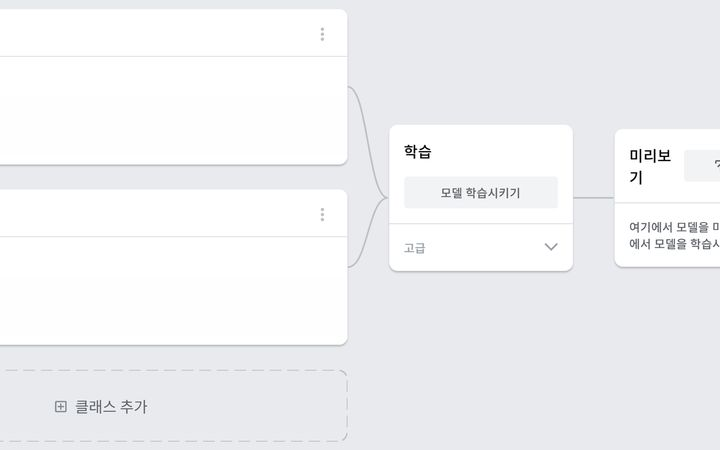
직접 학습웹캠으로 정상 · 불량 · 없음 사진을 모아 이미지 분류 모델을 직접 학습시킵니다.
해 볼 것 · 클래스 셋을 만들고 사진을 모아 학습한 뒤, 옆 팀 모델을 틀리게 만들어 봅니다.
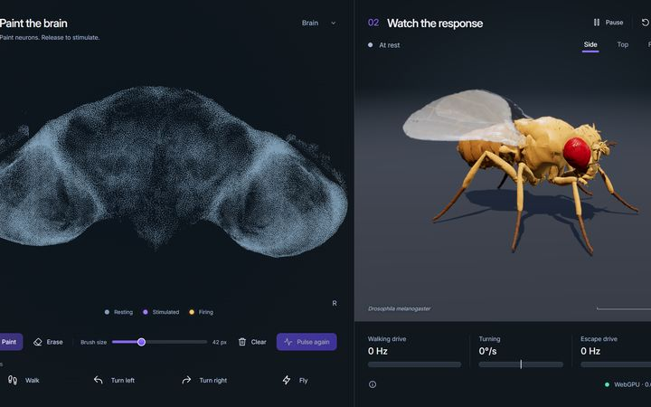
AI 원리 보기실제 초파리 뇌 연결망으로 몸을 움직입니다. 뉴런이 신호를 넘겨 행동이 나오는 모습을 봅니다.
해 볼 것 · Walk 버튼 없이 뇌의 한 자리를 칠해 파리를 걷게 해 봅니다.
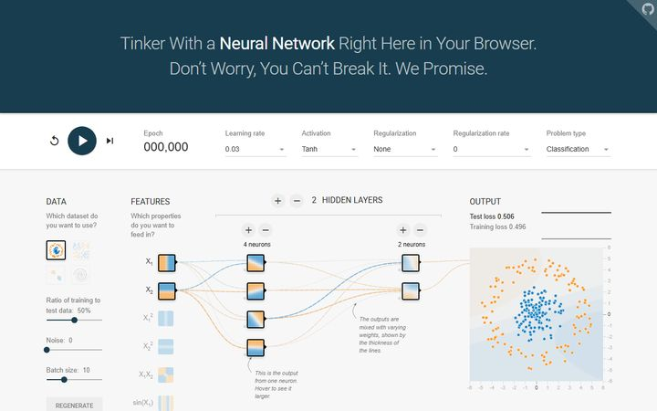
AI 원리 보기학습률 · 은닉층 · 잡음을 바꾸며 가중치가 고쳐지는 모습을 봅니다.
해 볼 것 · ▶을 누르고 은닉층 뉴런 수와 학습률을 바꿔, 손실 곡선이 어떻게 달라지는지 비교합니다.
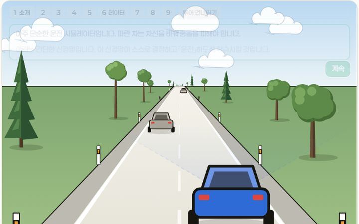
직접 학습같은 신경망을 문제 카드(지도) · 따라 하기(모방) · 시행착오(강화)로 학습시키고, 처음 보는 도로 500m로 시험합니다.
해 볼 것 · 안내 투어를 따라 카드 8장에 답을 붙여 학습시키고, 다른 두 방법과 결과를 비교합니다.
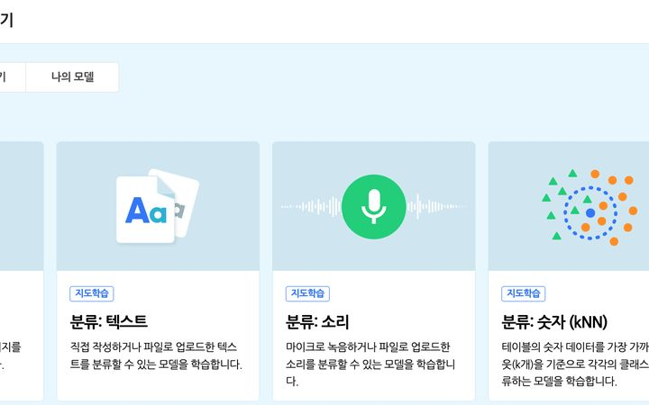
직접 학습엔트리 안에서 정상 · 불량 · 없음 모델을 학습시켜 라쿤봇 블록에 바로 씁니다.
해 볼 것 · [인공지능] → [인공지능 모델 학습하기] → 이미지 분류. 모델 이름은 「팀명_v1」로 저장합니다.
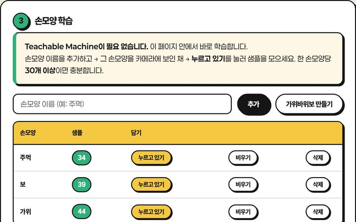
직접 학습로그인 없이 브라우저 안에서 손 모양 세 가지를 학습시킵니다.
해 볼 것 · 손 모양 셋을 30개씩 가르친 뒤, 다른 사람 손으로 시험해 봅니다.
7교시 · 학습 결과 개선 교시로 가기 →
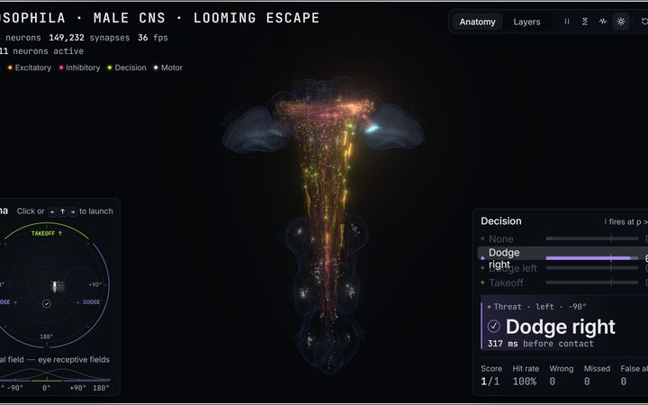
AI 원리 보기뇌도 임계값으로 피할지 말지 정합니다. 잡음을 켜면 헛반응과 놓침이 생깁니다.
해 볼 것 · 임계값과 잡음을 바꿔 헛반응 · 놓침이 어떻게 바뀌는지 보고, 신뢰도 기준값과 연결합니다.